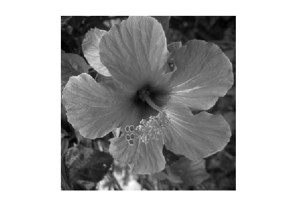
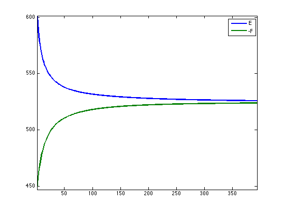

Fenchel-Rockafellar Duality
This numerical tour is an introduction to convex duality with an application to total variation denoising.
Contents
Convex Duality
Given some convex, proper, and lower semi-continuous function \(f(x)\) defined for \(x \in \RR^N\), its Legendre-Fenchel dual function is defined as \[ \forall u \in \RR^N, \quad f^*(u) = \umax{x \in \RR^N} \dotp{x}{u} - f(x). \]
One can show that \(f^*\) is a convex function, and that it satisfies \((f^*)^* = f\).
One can show if \(f(x) = \frac{1}{2} \norm{A x - b}^2\) where \(A \in \RR^{N \times N}\) is an invertible matrix, then \[f^*(u) = \frac{1}{2} \norm{\tilde A u + b}^2 \qwhereq \tilde A = (A^*)^{-1}. \]
One can show that in the case of \(\ell^p\) norms \[ f(x) = \norm{x}_p = \pa{ \sum_{i=1}^N \abs{x_i}^p }^{1/p} \] with the usual extension to \(p=+\infty\) \[ \norm{x}_\infty = \umax{1 \leq i \leq N} \abs{x_i}\] then one has \[ f^*(u) = \iota_{\norm{\cdot}_q \leq 1} \qwhereq \frac{1}{p}+\frac{1}{q}=1, \] where \(\iota_{\Cc}\) is the indicator function of the convex set \(\Cc\).
FB on the Fenchel-Rockafellar Dual Problem
We are concerned with the minimization of composite problems of the form \[ \umin{x \in \RR^N} f(x) + g(A(x)) \] where \( A \in \in \RR^{P \times N} \) is a linear map (a matrix), \(f : \RR^N \rightarrow \RR \) and \(g : \RR^P \rightarrow \RR \) are convex functional.
We now assume that \(f\) is a \(L\)-strongly convex function. In this case, one can show that \(f^*\) is a \(C^1\) smooth function, and that its gradient is \(L\)-Lipschitz.
In this case, the Fenchel-Rockafellar theorem shows that one can solve the following dual problem \[ \umin{x \in \RR^N} f(x) + g(A(x)) = - \umin{u \in \RR^P} f^*( -A^* u ) + g^*(u) \] and recover the unique solution \(x^\star\) of the primal problem from a (non-necessarily unique) solution \(u^\star\) to the dual problem as \[ x^\star = \nabla f^*( -A^* u^\star ). \]
Denoting \(F(u) = f^*( -A^* u )\) and \(G(u) = g^*(u)\), one thus needs to solve the problem \[ \umin{u \in \RR^P} F(u) + G(u). \]
We assume that the function \(g\) is simple, in the sense that one can compute in closed form the so-called proximal mapping, which is defined as \[ \text{prox}_{\ga g}(x) = \uargmin{z \in \RR^N} \frac{1}{2}\norm{x-z}^2 + \ga g(z). \] for any \(\ga > 0\).
Note that \(g\) being simple is equivalent to \(g^*\) also being simple because of Moreau's identity: \[ x = \text{prox}_{\tau g^*}(x) + \tau \text{prox}_{g/\tau}(x/\tau). \]
Since \(F\) is smooth and \(G\) is simple, one can apply the Foward-Backward algorithm, which reads, after initilizing \(u^{(0)} \in \RR^P\), \[ u^{(\ell+1)} = \text{prox}_{\ga G}\pa{ u^{(\ell)} - \ga \nabla F( u^{(\ell)} ) }. \] with \(\ga < 2/L\).
The primal iterates are defined as \[ x^{(\ell)} = \nabla F( -A^* u^{(\ell)} ). \]
Total Variation
The total variation of a smooth function \( \phi : \RR^2 \rightarrow \RR \) is defined as \[ J(\phi) = \int \norm{\nabla \phi(s)} d s\] The total variation of an image is also equal to the total length of its level sets. \[ J(\phi) = \int_{-\infty}^{+\infty} L( S_t(\phi) ) dt. \] Where \(S_t(\phi)\) is the level set at \(t\) of the function \(\phi\) \[S_t(\phi)= \enscond{ s }{ \phi(s)=t } . \] This shows that the total variation can be extended to functions having step discontinuities.
We consider images \(x = (x_{i,j})_{i,j} \in \RR^N\) of \(N=n\times n\) pixels.
We consider here a discretized gradient operator \( A : \RR^N \rightarrow \RR^P \) where \(P=2N\) defined as \[ A x = u = (u^1,u^2) \qwhereq u^1 = ( x_{i+1,j}-x_{i,j} )_{ i,j } \in \RR^N \qandq u^2 = ( x_{i,j+1}-x_{i,j} )_{ i,j } \in \RR^N. \] where we assume periodic boundary conditions for simplicity.
A = @(x)grad(x);
The adjoint \(A^*\) of the discrete gradient is minus the discrete divergence.
As = @(u)-div(u);
In the following, while images \(x \in \RR^{N}\) are stored as arrays of size (n,n), gradient vector fields \(u \in \RR^P\) are stored as arrays size (n,n,2).
The discrete total variation is defined as the \(\ell^1-\ell^2\) norm of the discretized gradient \[ J(x) = \norm{A x}_{1,2} \qwhereq \norm{u}_{1,2} = \sum_{i,j} \norm{u_{i,j}} \] where \(u = (u_{i,j} \in \RR^2)_{i,j}\) is a vector field.
norm12 = @(u)sum(sum( sqrt(sum( u.^2,3 )) )); J = @(x)norm12(A(x));
Total Variation Regularization
We consider here denoising using total variation regularization. This was first introduced in:
L.I. Rudin, S. Osher, E. Fatemi, Nonlinear total variation based noise removal algorithms, Physica D, vol. 60, pp. 259-268, 1992.
Given a noisy image \(y \in \RR^N\), it computes \[ x^\star = \uargmin{x \in \RR^N} \frac{1}{2}\norm{x-y}^2 + \la J(x), \] where the regularization parameter \(\la \geq 0\) should be adapted to the noise level.
Number of pixels.
n = 256;
First we load an image \(x_0 \in \RR^N\) of \(N=n \times n\) pixels.
name = 'hibiscus';
x0 = load_image(name,n);
x0 = rescale( sum(x0,3) );
Display the original image \(x_0\).
clf; imageplot(clamp(x0));
Add some noise to the original image, to obtain \(y=x0+w\).
sigma = .1; y = x0 + randn(n,n)*sigma;
Display the noisy image \(y\).
clf; imageplot(clamp(y));
Set the regularization parameter \(\la\).
lambda = .2;
Chambolle Dual Algorithm
We consider here the application of FB on the dual of the ROF problem, as initially proposed in:
Antonin Chambolle, An Algorithm for Total Variation Minimization and Applications, Journal of Mathematical Imaging and Vision, 20(1-2), 2004.
An earlier version of this algorithm was proposed in:
B. Mercier, Inequations Variationnelles de la Mecanique Publications Mathematiques d'Orsay, no. 80.01. Orsay, France, Universite de Paris-XI, 1980.
For a description of a more general framework, see:
P. L. Combettes, Dinh Dung, and B. C. Vu, Dualization of signal recovery problems, Set-Valued and Variational Analysis, vol. 18, pp. 373-404, December 2010
The primal problem corresponds to minimizing \(E(x) = f(x)+g(A(x))\) where \[ f(x) = \frac{1}{2}\norm{x-y}^2 \qandq g(u) = \la \norm{u}_{1,2}. \]
mynorm = @(x)norm(x(:)); f = @(x)1/2*mynorm(x-y)^2; g = @(x)lambda*J(x); E = @(x)f(x)+g(x);
The dual problem corresponds to minimzing \(F(u)+ G(u)\) where \[ F(u) = \frac{1}{2} \norm{y - A^* u}^2 - \frac{1}{2}\norm{y}^2 \qandq G(u) = \iota_{\Cc}(u) \qwhereq \Cc = \enscond{u}{\norm{u}_{\infty,2} \leq \la}. \] where \[ \norm{u}_{\infty,2} = \umax{i,j} \norm{u_{i,j}} \]
F = @(u)1/2*mynorm(y-As(u))^2 - 1/2*mynorm(y)^2;
One can thus solves the ROF problem by computing \[ x^\star = y - A^* u^\star \] where \[ u^\star \in \uargmin{ \norm{u}_{1,2} \leq \la } \norm{y - A^* u} \]
One can compute explicitely the gradient of \(F\): \[ \nabla F(u) = A (A^* u - y). \]
nablaF = @(u)A(As(u)-y);
The proximal operator of \( G \) is the orthogonal projection on \(\Cc\), which is obtained as \[ \text{prox}_{\ga G}(u)_{i,j} = \frac{u_{i,j}}{ \max(1,\norm{u_{i,j}}/\lambda) }. \] Note that it does not depends on \(\ga\).
d = @(u)repmat( sqrt(sum(u.^2,3)), [1 1 2] ); proxG = @(u,gamma)u ./ max( d(u)/lambda, 1 );
The gradient step size of the FB should satisfy \[ \ga < \frac{2}{\norm{A^* A}} = \frac{1}{4}. \]
gamma = 1/5;
Initialize the FB with \(u=0 \in \RR^P\).
u = zeros(n,n,2);
One step of FB.
u = proxG( u - gamma * nablaF(u), gamma );
Update the solution using \[ x^{(\ell)} = y - A^* u. \]
x = y - As(u);
Exercice 1: (check the solution) Perform Chambolle algorithm to solve the ROF problem. Monitor the primal \(E\) and dual \(-F\) energies.
exo1;
Display the denoised image \(x^\star\).
clf; imageplot(clamp(x));